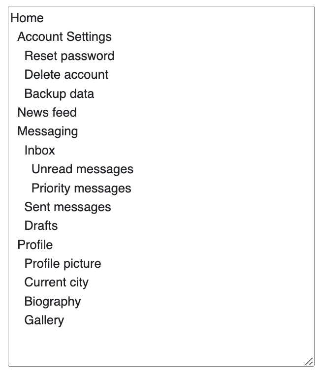
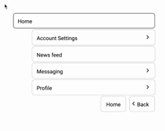

Tree in text format

A tree outlines a product's categories and features.Its design shapes how users perform their tasks with the product.
Tree in clickable format

The categories become clickable menus in the participants' view. The test asks naive testers to find destinations in the tree structure.
Tree Testing with UXbeam
Familiar with Notion? Curious how doing UX research just by typing looks like? Check out this rundown on setting up tree tests in seconds:
Please note
All our tests are sourced through our panel of US-based testers.
This approach is the most efficient for diagnosing generic information architecture issues - and a time-saver for most teams!
We are soon to release a shareable study link functionality for sending tests to your own participants.
Detailed Guides
For in-page guidance, please locate these icons: